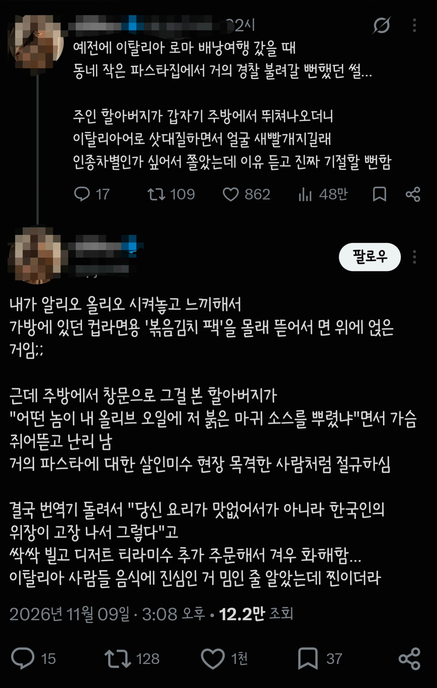

된장찌개에 우유풀어넣는급이긴함 ㄹㅇ;;

된장찌개에 우유풀어넣는급이긴함 ㄹㅇ;;
이집은 밥이 맛이 없네 하면서 케첩 뿌려먹는다 생각하니
티라미수 시키고 느끼하니까 '아이스 아메리카노' 시켜서 싹 내리기까지 했어야지
티라미수 가루 때문에 기침나니까 쓱쓱 비벼먹어야지
후 불고 먹는거 아니었냐
에스프레소 앤 어 컵 오브 아이스 워터 플리즈^-^
걍 생각이 없네
면 위에 안 뿌리고 옆에 두고 먹었으면 괜찮았을까
째려는 봤을듯 ㅋㅋ
스벅 캡슐로 커피 마시니까 장모님 비알레띠 모카포트로 대가리 칠라고 하더라
ㅋㅋㅋㅋㅋ 얼음넣었나?
실화인가 템플릿인가 애매한데
일단 증거가 없으니 구라가 8할.
파딱이니 퍼온 거 아님 후자겠지
아무리 잘 봐주려고 해도 /이탈리아 배낭여행가서 알리오올리오 시켰는데/ <- 까지가 경험담 일듯
나머진 걍 먹으면서 김치땡겨서 한 망상
방구석에서 알리오 올리오 처먹다가 쓴 망상일지도
-트-
기사식당에서 산업기사라고 하니까 뚝배기 깬거랑 비슷한 느낌인거지 ㅋㅋㅋ
할아버지가 화낼만 한 것 같은데
남의 식당에서 다른 음식 까먹는 것 자체가 좀 비매너 아니냐
긍께
이거마따
업장에서 수트르스트뢰밍 까기.
한국에서도 안하는짓거리를ㅋㅋㅋㅋ
붓싼여자인교?
근데 좀 이해는 되는게 일주일 이상 있으면 김치 마렵긴해 ㅋㅋㅋ
존나 어글리코리안
존나 어글리코리안 아닌가. 왜 음식점에 외부음식 반입을해
식당에서 저러는건 한국에서도 안하겠구만 존나 비매너네
한국도 아니고
파스타 본고장에서 저짓했으면
사형감이지
느끼하면 그냥 아아 시켜먹지
이탈리아 간거 부터가 구라
비매너임?
대한항공에서 볶은 고추장 파는거 해외 장기 출장 가면 사가지고 다니면서 뭔가 고향의 맛 느끼고 싶으면 뿌려 먹는데
ㅋㅋㅋ박보겁나웃겨
가까이서는 비극 멀리서는 희극이라고
남얘기니까 웃기긴 한데 ㅋㅋㅋㅋ
주방장 보는 앞에서 이집은 물이 제일 맛있다 시전하면 싸움나는건 어디든 똑같은거지 ㅋㅋㅋㅋ
절임단무지는 봐주는 관행
트와 쓰는 과학
적어도 옆에다가 놓고 곁들여먹지
뭔 죄를 졌다고 병신 요리사 한테 싹싹 빌기까지ㅋㅋㅋㅋ
주작도 지켜야할 선이있다
뭐라하지 마라. 각자의 여행이 있는거지.
나 어머니랑 둘이서 이태리여행 1주일 다녀온적있는데
진짜 평생 먹어본 일본제외 해외음식중에 제일 맛있던거 다 이태리에 있었음.
덕분에 이태리사람들 음식에 진심인거 납득하게 됨. 여기에 뭐 뿌리면 모욕적이라는거 인정.
구라안치고 요리도 아니고 오렌지 하나 먹는데도 오~ 이태리 오렌지는 뭐가 달라!! 생각이 들정도....
내가 비밍 하나 알려줄게. 이거 트위터 망상 주작 소설이야
외부음식 반입해서 취식까지 한데다가 그걸 자기가 만든 음식에 끼얹었으니 열불터지는게 정상이지
진짜라면 예의라는걸 아예 포기한새끼인데
된찌에 우유 넣어도 왠지 괜찮을것 같다라는 생각이 드는건...고소한 된찌 될것 같은대
고소당하고싶냐
김치냄새 씹오지는데
다른 손님들한테 개민폐였을 듯
음...근데 굳이 남의 업장가서 그렇게까지 먹는 것도 좀 그래.